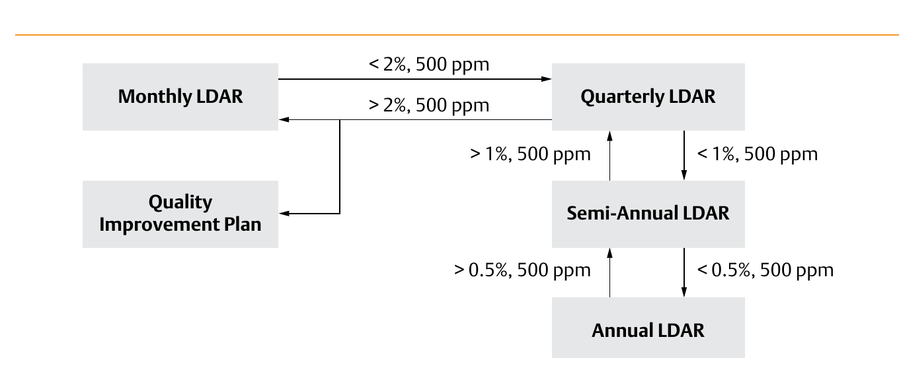

Stepping the LDAR Measurement Frequency

- 1Every valve in regulated service starts on Monthly LDAR monitoring
- 2Below 2% of valves leaking above 500 ppmv steps Monthly → Quarterly; below 1% steps Quarterly → Semi-Annual; below 0.5% steps Semi-Annual → Annual
- 3Exceeding the threshold on re-monitoring reverts one level up — Annual → Semi-Annual, Semi-Annual → Quarterly, Quarterly → Monthly
- 4A facility still above 2% while already at Monthly — the floor, with nowhere lower to revert — enters a Quality Improvement Plan instead
After Control Valve Handbook, 6th ed., Fig. 3.25 (printed p. 69) — cropped this session from the shared Fig. 3.25/3.26 composite scan to isolate the flowchart alone; own printed labels retained. Component Index: cvh-cmp-voc-ldar-measurement-frequency.